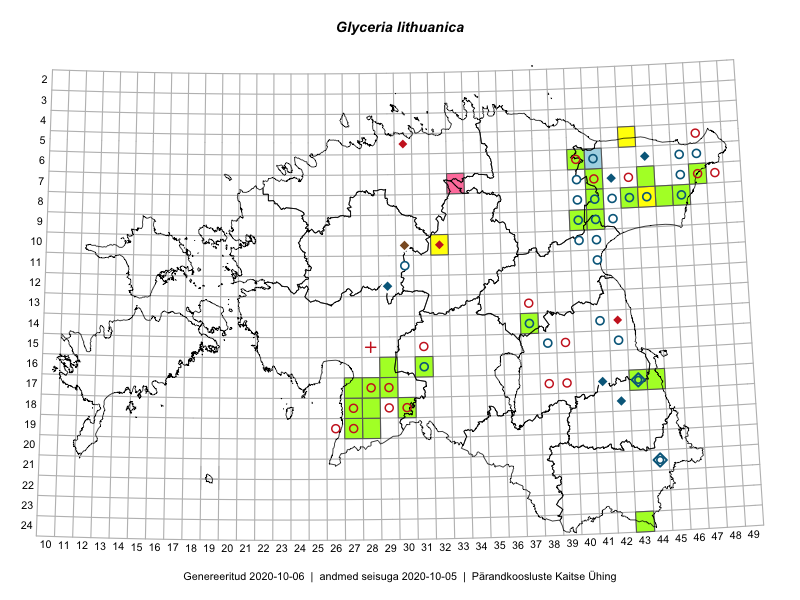

Glyceria lithuanica — kahar parthein
Poaceae :: Glyceria lithuanica (Gorski) Gorski (177)

Kaart põhineb 181 kirjel:
vaatlusi 52
herbaareksemplare 125
PKÜ kirjeid1 2
ELFi kirjeid2 2
Taime kaasaegsed ja ajaloolised leiukohad asuvad 50 ruudus.
Tingmärgid ja ruutude arvud periooditi (U3 / V4 )
█ 2006–2020 (28/–)
◆/◇ 1971–2005 (8/10)
○ 1921–1970 (25/40)
+ kuni 1920 (0/1)
× hävinud (–/0)
? kaheldav (–/0)
| Ruut | Leidja(d) | Leiuaeg | Kirje |
|---|---|---|---|
| 06-44 | 1982-07-07 | ruut/ala: Glyceria lithuanica (Gorski) Gorski | |
| 10-41 | Maret Kask | 1953-08 | ruut/ala: Glyceria lithuanica (Gorski) Gorski |
| 14-37 | Maret Kask | 1966-06-22 | ruut/ala: Glyceria lithuanica (Gorski) Gorski |
| 14-41 | Maret Kask | 1948–1968 | ruut/ala: Glyceria lithuanica (Gorski) Gorski |
| 10-40 | I. Paap | 1954-06-14–1954-08-10 | ruut/ala: Glyceria lithuanica (Gorski) Gorski |
| 11-41 | M. Kask | 1963–1964 | ruut/ala: Glyceria lithuanica (Gorski) Gorski |
| 17-41 | 1971-05 | ruut/ala: Glyceria lithuanica (Gorski) Gorski | |
| 17-43 | Linda Viljasoo, Heljo Krall | 1983-08-01 | ruut/ala: Glyceria lithuanica (Gorski) Gorski |
| 18-42 | Maret Kask, Linda Viljasoo | 1978–1979 | ruut/ala: Glyceria lithuanica (Gorski) Gorski |
| 08-45 | Peedu Saar, Liina Oja | 2015-07-22 | ruut/ala: Glyceria lithuanica (Gorski) Gorski |
| 08-43 | Thea Kull, Eerik Leibak | 2015-07-24 | ruut/ala: Glyceria lithuanica (Gorski) Gorski |
| 08-46 | Thea Kull, Eerik Leibak | 2015-07-23 | ruut/ala: Glyceria lithuanica (Gorski) Gorski |
| 08-46 | Thea Kull, Eerik Leibak | 2015-07-23 | ruut/ala: Glyceria lithuanica (Gorski) Gorski |
| 08-43 | Thea Kull, Eerik Leibak | 2015-07-24 | ruut/ala: Glyceria lithuanica (Gorski) Gorski |
| 07-41 | Thea Kull, Eerik Leibak | 2015-09-10 | ruut/ala: Glyceria lithuanica (Gorski) Gorski |
| 18-30 | Indrek Tammekänd | 2016-08-05 | ruut/ala: Glyceria lithuanica (Gorski) Gorski |
| 19-27 | Indrek Tammekänd | 2016-08-02 | ruut/ala: Glyceria lithuanica (Gorski) Gorski |
| 19-28 | Indrek Tammekänd | 2016-07-27 | ruut/ala: Glyceria lithuanica (Gorski) Gorski |
| 08-44 | Indrek Tammekänd, Renno Nellis | 2015-10-16 | ruut/ala: Glyceria lithuanica (Gorski) Gorski |
| 14-37 | Meeli Mesipuu, Thea Kull | 2017-06-19 | ruut/ala: Glyceria lithuanica (Gorski) Gorski |
| 14-37 | Meeli Mesipuu, Helen Toom | 2017-08-14 | ruut/ala: Glyceria lithuanica (Gorski) Gorski |
| 05-43 | Katrit Karus, Tõnu Feldmann | 2017-08-09 | ruut/ala: Glyceria lithuanica (Gorski) Gorski |
| 10-32 | Katrit Karus, Tõnu Feldmann | 2017-07-05 | ruut/ala: Glyceria lithuanica (Gorski) Gorski |
| 18-28 | Indrek Tammekänd, Raivo Endrekson | 2015-07-21–2015-09-10 | ruut/ala: Glyceria lithuanica (Gorski) Gorski |
| 14-37 | Meeli Mesipuu, Thea Kull | 2017-06-19 | ruut/ala: Glyceria lithuanica (Gorski) Gorski |
| 14-37 | Meeli Mesipuu | 2017-06-19 | ruut/ala: Glyceria lithuanica (Gorski) Gorski |
| 14-37 | Meeli Mesipuu | 2017-06-19 | ruut/ala: Glyceria lithuanica (Gorski) Gorski |
| 14-37 | Meeli Mesipuu | 2017-06-19 | ruut/ala: Glyceria lithuanica (Gorski) Gorski |
| 14-37 | Thea Kull, Meeli Mesipuu | 2017-06-19 | ruut/ala: Glyceria lithuanica (Gorski) Gorski |
| 14-37 | Meeli Mesipuu | 2017-06-19 | ruut/ala: Glyceria lithuanica (Gorski) Gorski |
| 14-37 | Meeli Mesipuu, Thea Kull | 2017-06-19 | ruut/ala: Glyceria lithuanica (Gorski) Gorski |
| 14-37 | Meeli Mesipuu, Thea Kull | 2017-06-19 | ruut/ala: Glyceria lithuanica (Gorski) Gorski |
| 14-37 | Meeli Mesipuu, Thea Kull | 2017-06-19 | ruut/ala: Glyceria lithuanica (Gorski) Gorski |
| 14-37 | Thea Kull | 2017-06-19 | ruut/ala: Glyceria lithuanica (Gorski) Gorski |
| 14-37 | Meeli Mesipuu, Helen Toom | 2017-08-14 | ruut/ala: Glyceria lithuanica (Gorski) Gorski |
| 14-37 | Meeli Mesipuu, Helen Toom | 2017-08-14 | ruut/ala: Glyceria lithuanica (Gorski) Gorski |
| 14-37 | Meeli Mesipuu, Helen Toom | 2017-08-14 | ruut/ala: Glyceria lithuanica (Gorski) Gorski |
| 14-37 | Meeli Mesipuu, Helen Toom | 2017-08-14 | ruut/ala: Glyceria lithuanica (Gorski) Gorski |
| 14-37 | Meeli Mesipuu, Helen Toom | 2017-08-14 | ruut/ala: Glyceria lithuanica (Gorski) Gorski |
| 14-37 | Meeli Mesipuu, Helen Toom | 2017-08-14 | ruut/ala: Glyceria lithuanica (Gorski) Gorski |
| 14-37 | Meeli Mesipuu, Helen Toom | 2017-08-14 | ruut/ala: Glyceria lithuanica (Gorski) Gorski |
| 14-37 | Meeli Mesipuu, Helen Toom | 2017-08-14 | ruut/ala: Glyceria lithuanica (Gorski) Gorski |
| 14-37 | Meeli Mesipuu, Helen Toom | 2017-08-14 | ruut/ala: Glyceria lithuanica (Gorski) Gorski |
| 14-37 | Meeli Mesipuu, Helen Toom | 2017-08-14 | ruut/ala: Glyceria lithuanica (Gorski) Gorski |
| 14-37 | Meeli Mesipuu, Helen Toom | 2017-08-14 | ruut/ala: Glyceria lithuanica (Gorski) Gorski |
| 14-37 | Meeli Mesipuu, Helen Toom | 2017-08-14 | ruut/ala: Glyceria lithuanica (Gorski) Gorski |
| 14-37 | Meeli Mesipuu, Helen Toom | 2017-08-14 | ruut/ala: Glyceria lithuanica (Gorski) Gorski |
| 14-37 | Meeli Mesipuu, Helen Toom | 2017-08-14 | ruut/ala: Glyceria lithuanica (Gorski) Gorski |
| 14-37 | Meeli Mesipuu, Helen Toom | 2017-08-14 | ruut/ala: Glyceria lithuanica (Gorski) Gorski |
| 14-37 | Meeli Mesipuu, Helen Toom | 2017-08-14 | ruut/ala: Glyceria lithuanica (Gorski) Gorski |
| 14-37 | Meeli Mesipuu, Helen Toom | 2017-08-14 | ruut/ala: Glyceria lithuanica (Gorski) Gorski |
| 14-37 | Meeli Mesipuu, Helen Toom | 2017-08-14 | ruut/ala: Glyceria lithuanica (Gorski) Gorski |
| 17-43 | T. Lippmaa | 1931-06-13 | TU252141: Glyceria lithuanica (Gorski) Gorski |
| 17-43 | H. Sogenbits | 1931-06-13 | TU252147: Glyceria lithuanica (Gorski) Gorski |
| 11-30 | T. Lippmaa | 1928-08-06 | TU252153: Glyceria lithuanica (Gorski) Gorski |
| 11-30 | T. Lippmaa | 1928-08-06 | TU252154: Glyceria lithuanica (Gorski) Gorski |
| 08-40 | Albert Üksip | 1933-06-26 | TU252155: Glyceria lithuanica (Gorski) Gorski |
| 08-40 | Albert Üksip | 1933-06-26 | TU252156: Glyceria lithuanica (Gorski) Gorski |
| 09-40 | Albert Üksip | 1933-06-26 | TU252157: Glyceria lithuanica (Gorski) Gorski |
| 09-40 | Albert Üksip | 1933-06-26 | TU252158: Glyceria lithuanica (Gorski) Gorski |
| 08-42 | K. Eichwald | 1936-06-07 | TU252163: Glyceria lithuanica (Gorski) Gorski |
| 17-43 | H. Sogenbits | 1931-06-13 | TU252165: Glyceria lithuanica (Gorski) Gorski |
| 17-43 | H. Sogenbits | 1931-06-13 | TU252166: Glyceria lithuanica (Gorski) Gorski |
| 17-43 | T. Lippmaa | 1931-06-13 | TU252168: Glyceria lithuanica (Gorski) Gorski |
| 08-44 | T. Lippmaa | 1932-06-14 | TU252169: Glyceria lithuanica (Gorski) Gorski |
| 08-46 | T. Lippmaa | 1932-06-19 | TU252170: Glyceria lithuanica (Gorski) Gorski |
| 08-46 | A. Vaga | 1932-06-20 | TU255398: Glyceria lithuanica (Gorski) Gorski |
| 08-46 | T. Lippmaa | 1932-06-19 | TU266183: Glyceria lithuanica (Gorski) Gorski |
| 17-43 | T. Lippmaa | 1931-06-13 | TU268262: Glyceria lithuanica (Gorski) Gorski |
| 12-29 | Tõnu Ploompuu | 1990-10-26 | TALL C005612: Glyceria lithuanica (Gorski) Gorski |
| 08-43 | Visolde Puusepp, Agnes Ojaveer | 1963-06-26 | TAA0104237: Glyceria lithuanica (Gorski) Gorski |
| 08-43 | Agnes Ojaveer, Visolde Puusepp | 1963-06-26 | TAA0104238: Glyceria lithuanica (Gorski) Gorski |
| 08-46 | Silvia Talts | 1932-06-20 | TAA0104239: Glyceria lithuanica (Gorski) Gorski |
| 08-46 | Silvia Talts | 1932-06-20 | TAA0104240: Glyceria lithuanica (Gorski) Gorski |
| 14-37 | M. Kask | 1966-06-23 | TAA0104241: Glyceria lithuanica (Gorski) Gorski |
| 14-37 | M. Kask | 1966-06-23 | TAA0104242: Glyceria lithuanica (Gorski) Gorski |
| 06-41 | Linda Viljasoo | 1963-06-22 | TAA0104243: Glyceria lithuanica (Gorski) Gorski |
| 15-42 | Linda Viljasoo | 1967-06-19 | TAA0104244: Glyceria lithuanica (Gorski) Gorski |
| 15-42 | Linda Viljasoo | 1967-06-19 | TAA0104245: Glyceria lithuanica (Gorski) Gorski |
| 15-42 | Linda Viljasoo | 1967-06-19 | TAA0104246: Glyceria lithuanica (Gorski) Gorski |
| 06-41 | Linda Viljasoo | 1963-06-13 | TAA0104247: Glyceria lithuanica (Gorski) Gorski |
| 06-41 | Linda Viljasoo | 1963-06-13 | TAA0104248: Glyceria lithuanica (Gorski) Gorski |
| 08-46 | Toomas Kukk | 2007-06-20 | TAA0104249: Glyceria lithuanica (Gorski) Gorski |
| 21-44 | Linda Viljasoo | 1957-06-22 | TAA0104250: Glyceria lithuanica (Gorski) Gorski |
| 06-41 | M. Kask | 1963-06-24 | TAA0104251: Glyceria lithuanica (Gorski) Gorski |
| 06-41 | M. Kask | 1963-06-24 | TAA0104252: Glyceria lithuanica (Gorski) Gorski |
| 15-38 | M. Kask | 1968-06-24 | TAA0104253: Glyceria lithuanica (Gorski) Gorski |
| 14-41 | M. Kask | 1967-06-12 | TAA0104254: Glyceria lithuanica (Gorski) Gorski |
| 14-41 | M. Kask | 1967-06-12 | TAA0104255: Glyceria lithuanica (Gorski) Gorski |
| 14-41 | M. Kask | 1967-06-12 | TAA0104256: Glyceria lithuanica (Gorski) Gorski |
| 14-41 | M. Kask | 1967-06-12 | TAA0104257: Glyceria lithuanica (Gorski) Gorski |
| 09-41 | Agnes Ojaveer, Visolde Puusepp | 1963-06-29 | TAA0104258: Glyceria lithuanica (Gorski) Gorski |
| 07-42 | Thea Kull | 2002-06-19 | TAA0104259: Glyceria lithuanica (Gorski) Gorski |
| 08-41 | Vilma Kuusk | 1963-06-21 | TAA0104260: Glyceria lithuanica (Gorski) Gorski |
| 08-41 | Vilma Kuusk | 1963-06-21 | TAA0104261: Glyceria lithuanica (Gorski) Gorski |
| 09-42 | Silvia Talts | 1963-06-29 | TAA0104262: Glyceria lithuanica (Gorski) Gorski |
| 14-41 | M. Kask | 1967-07-09 | TAA0104263: Glyceria lithuanica (Gorski) Gorski |
| 14-41 | M. Kask | 1967-07-09 | TAA0104264: Glyceria lithuanica (Gorski) Gorski |
| 08-40 | Linda Viljasoo | 1963-07-25 | TAA0104265: Glyceria lithuanica (Gorski) Gorski |
| 08-40 | A. Üksip | 1933-06-26 | TAA0104266: Glyceria lithuanica (Gorski) Gorski |
| 16-31 | M. Kask | 1965-06-18 | TAA0104267: Glyceria lithuanica (Gorski) Gorski |
| 14-37 | M. Kask | 1966-06-23 | TAA0104268: Glyceria lithuanica (Gorski) Gorski |
| 08-42 | Linda Viljasoo | 1963-07-01 | TAA0104269: Glyceria lithuanica (Gorski) Gorski |
| 08-42 | Linda Viljasoo | 1963-07-01 | TAA0104270: Glyceria lithuanica (Gorski) Gorski |
| 07-46 | Gustav Vilbaste | 1929-07-13 | TAA0104271: Glyceria lithuanica (Gorski) Gorski |
| 07-46 | Gustav Vilbaste | 1929-07-13 | TAA0104272: Glyceria lithuanica (Gorski) Gorski |
| 07-46 | Gustav Vilbaste | 1929-07-13 | TAA0104273: Glyceria lithuanica (Gorski) Gorski |
| 07-46 | Gustav Vilbaste | 1929-07-13 | TAA0104274: Glyceria lithuanica (Gorski) Gorski |
| 06-46 | Gustav Vilbaste | 1929-07-15 | TAA0104275: Glyceria lithuanica (Gorski) Gorski |
| 06-46 | Gustav Vilbaste | 1929-07-15 | TAA0104276: Glyceria lithuanica (Gorski) Gorski |
| 10-41 | Gustav Vilbaste | 1928-08-02 | TAA0104277: Glyceria lithuanica (Gorski) Gorski |
| 07-40 | Gustav Vilbaste | 1928-08-03 | TAA0104278: Glyceria lithuanica (Gorski) Gorski |
| 14-37 | Gustav Vilbaste | 1932-08-22 | TAA0104279: Glyceria lithuanica (Gorski) Gorski |
| 06-41 | Vilma Kuusk | 1963-06-24 | TAA0104280: Glyceria lithuanica (Gorski) Gorski |
| 06-41 | Vilma Kuusk | 1963-06-24 | TAA0104281: Glyceria lithuanica (Gorski) Gorski |
| 17-43 | M. Kask | 1965-07 | TAA0104282: Glyceria lithuanica (Gorski) Gorski |
| 07-41 | Toomas Kukk | 2006-08-31 | TAA0104283: Glyceria lithuanica (Gorski) Gorski |
| 07-41 | Toomas Kukk | 2006-08-31 | TAA0104284: Glyceria lithuanica (Gorski) Gorski |
| 17-43 | Hugo Sogenbits | 1931-06-13 | TAA0104285: Glyceria lithuanica (Gorski) Gorski |
| 17-43 | Hugo Sogenbits | 1931-06-13 | TAA0104286: Glyceria lithuanica (Gorski) Gorski |
| 17-43 | Hugo Sogenbits | 1931-06-13 | TAA0104287: Glyceria lithuanica (Gorski) Gorski |
| 17-43 | Hugo Sogenbits | 1931-06-13 | TAA0104288: Glyceria lithuanica (Gorski) Gorski |
| 17-43 | Hugo Sogenbits | 1931-06-13 | TAA0104289: Glyceria lithuanica (Gorski) Gorski |
| 17-43 | Hugo Sogenbits | 1931-06-13 | TAA0104290: Glyceria lithuanica (Gorski) Gorski |
| 17-43 | Hugo Sogenbits | 1931-06-15 | TAA0104291: Glyceria lithuanica (Gorski) Gorski |
| 17-43 | Hugo Sogenbits | 1931-06-15 | TAA0104292: Glyceria lithuanica (Gorski) Gorski |
| 17-43 | Gustav Vilbaste | 1928-08-24 | TAA0104293: Glyceria lithuanica (Gorski) Gorski |
| 08-45 | Peedu Saar, Liina Oja | 2015-07-22 | TAA0116396: Glyceria lithuanica (Gorski) Gorski |
| 07-44 | Toomas Kukk, Tiit Hallikma | 2015-07-20 | TAA0134261: Glyceria lithuanica (Gorski) Gorski |
| 07-44 | Toomas Kukk, Tiit Hallikma | 2015-07-20 | TAA0134262: Glyceria lithuanica (Gorski) Gorski |
| 08-41 | Peedu Saar, Timo Luhamäe | 2016-07-29 | TAA0134687: Glyceria lithuanica (Gorski) Gorski |
| 08-41 | Peedu Saar, Timo Luhamäe | 2016-07-29 | TAA0134688: Glyceria lithuanica (Gorski) Gorski |
| 08-46 | Thea Kull, Eerik Leibak | 2015-07-23 | TAA0113786: Glyceria lithuanica (Gorski) Gorski |
| 06-40 | Thea Kull | 2014-07-11 | TAA0113797: Glyceria lithuanica (Gorski) Gorski |
| 07-47 | Thea Kull, Peedu Saar | 2014-07-24 | TAA0113870: Glyceria lithuanica (Gorski) Gorski |
| 07-47 | Thea Kull, Peedu Saar | 2014-07-24 | TAA0113871: Glyceria lithuanica (Gorski) Gorski |
| 17-43 | Anneli Palo | 2016-07-01 | TAA0136328: Glyceria lithuanica (Gorski) Gorski |
| 17-29 | Indrek Tammekänd | 2015-09-05 | TAA0136199: Glyceria lithuanica (Gorski) Gorski |
| 17-29 | Indrek Tammekänd | 2015-09-05 | TAA0136200: Glyceria lithuanica (Gorski) Gorski |
| 19-28 | Indrek Tammekänd | 2015-07-05 | TAA0136204: Glyceria lithuanica (Gorski) Gorski |
| 19-28 | Indrek Tammekänd | 2015-07-05 | TAA0136205: Glyceria lithuanica (Gorski) Gorski |
| 19-27 | Indrek Tammekänd | 2015-10-10 | TAA0136206: Glyceria lithuanica (Gorski) Gorski |
| 17-28 | Indrek Tammekänd | 2015-08-24 | TAA0136207: Glyceria lithuanica (Gorski) Gorski |
| 18-28 | Indrek Tammekänd | 2015-08-12 | TAA0136208: Glyceria lithuanica (Gorski) Gorski |
| 18-28 | Indrek Tammekänd | 2015-08-12 | TAA0136209: Glyceria lithuanica (Gorski) Gorski |
| 16-29 | Indrek Tammekänd | 2015-07-31 | TAA0136210: Glyceria lithuanica (Gorski) Gorski |
| 17-27 | Indrek Tammekänd | 2015-07-19 | TAA0136211: Glyceria lithuanica (Gorski) Gorski |
| 18-27 | Indrek Tammekänd | 2015-09-10 | TAA0136212: Glyceria lithuanica (Gorski) Gorski |
| 08-43 | Toomas Kukk | 2014-07-09 | TAA0112901: Glyceria lithuanica (Gorski) Gorski |
| 08-43 | Toomas Kukk | 2014-07-09 | TAA0112902: Glyceria lithuanica (Gorski) Gorski |
| 07-41 | Thea Kull, Eerik Leibak | 2014-09-10 | TAA0113251: Glyceria lithuanica (Gorski) Gorski |
| 08-45 | Indrek Tammekänd, Renno Nellis | 2016-10-23 | TAA0139745: Glyceria lithuanica (Gorski) Gorski |
| 18-30 | Indrek Tammekänd | 2016-08-05 | TAA0139996: Glyceria lithuanica (Gorski) Gorski |
| 18-30 | Indrek Tammekänd | 2016-08-05 | TAA0139995: Glyceria lithuanica (Gorski) Gorski |
| 08-41 | Timo Luhamäe, Peedu Saar | 2016-07-29 | TAA0142147: Glyceria lithuanica (Gorski) Gorski |
| 08-41 | Timo Luhamäe, Peedu Saar | 2016-07-29 | TAA0142148: Glyceria lithuanica (Gorski) Gorski |
| 14-37 | Meeli Mesipuu | 2017-06-19 | TAA0145093: Glyceria lithuanica (Gorski) Gorski |
| 14-37 | Meeli Mesipuu, Thea Kull | 2017-06-19 | TAA0145096: Glyceria lithuanica (Gorski) Gorski |
| 14-37 | Meeli Mesipuu, Thea Kull | 2017-06-19 | TAA0145097: Glyceria lithuanica (Gorski) Gorski |
| 14-37 | Meeli Mesipuu, Helen Toom | 2017-08-14 | TAA0145135: Glyceria lithuanica (Gorski) Gorski |
| 14-37 | Meeli Mesipuu, Helen Toom | 2017-08-14 | TAA0145136: Glyceria lithuanica (Gorski) Gorski |
| 09-41 | Ott Luuk, Eerik Leibak | 2016-08-05 | TAA0145577: Glyceria lithuanica (Gorski) Gorski |
| 07-47 | Katrin Jürgens | 2018-07-19 | TAA0146161: Glyceria lithuanica (Gorski) Gorski |
| 07-47 | Katrin Jürgens | 2018-07-19 | TAA0146162: Glyceria lithuanica (Gorski) Gorski |
| 09-40 | Ott Luuk, Eerik Leibak | 2016-08-09 | TAA0145595: Glyceria lithuanica (Gorski) Gorski |
| 14-37 | Meeli Mesipuu, Thea Kull | 2017-06-19 | TAA0145098: Glyceria lithuanica (Gorski) Gorski |
| 18-28 | Indrek Tammekänd | 2018-08-25 | TAA0147662: Glyceria lithuanica (Gorski) Gorski |
| 16-31 | Indrek Tammekänd | 2018-06-04 | TAA0147685: Glyceria lithuanica (Gorski) Gorski |
| 16-31 | Indrek Tammekänd | 2018-06-04 | TAA0147686: Glyceria lithuanica (Gorski) Gorski |
| 16-31 | Indrek Tammekänd | 2018-06-04 | TAA0147687: Glyceria lithuanica (Gorski) Gorski |
| 21-44 | Aime Mäemets | 1974-07-07 | TAA2003413: Glyceria lithuanica (Gorski) Gorski |
| 17-44 | Indrek Tammekänd, Liis Kuresoo, Teele Paluots | 2019-06-17 | TAA0151747: Glyceria lithuanica (Gorski) Gorski |
| 06-47 | T. Lippmaa | 1932-07-13 | TU252152: Glyceria lithuanica (Gorski) Gorski |
| 11-41 | K. Eichwald | 1932-07-07 | TU252160: Glyceria lithuanica (Gorski) Gorski |
| 08-46 | T. Lippmaa, S. Krastin, H. Salasoo, A. Vaga | 1932-06-20 | TU252167: Glyceria lithuanica (Gorski) Gorski |
| 24-43 | Ott Luuk, Tiit Hallikma | 2019-07-11 | TAA0152479: Glyceria lithuanica (Gorski) Gorski |
| 24-43 | Ott Luuk, Tiit Hallikma | 2019-07-11 | TAA0152480: Glyceria lithuanica (Gorski) Gorski |
| 06-41;07-41 | Thea Kull, Eerik Leibak | 2014-09-12 | ELF: 24085 |
| 07-41 | Thea Kull, Eerik Leibak | 2014-09-10 | ELF: 24095 |
| 10-30 | 2000-08-06 | PKÜ: 2987 | |
| 07-33 | 2009-10-22 | PKÜ: 15807 |
Pärandkoosluste Kaitse Ühingu (PKÜ) andmebaas sisaldab inventeeritud koosluste kirjeldusi ja liigiloendeid. Kõige enam on andmeid niidutaimede kohta.↩︎
Eestimaa Looduse Fondi (ELF) andmebaas sisaldab inventeeritud koosluste kirjeldusi ja liigiloendeid. Eriti rohkesti on andmeid märgalade kohta.↩︎
Ruutude arv uue atlase andmekogu järgi. Muuhulgas arvestab vanemat herbaariumi, 2005. aasta atlase välitöölehtedelt uuesti digitaliseeritud andmeid jne. Uue atlase andmekogust pärinevad andmed on kaardile kantud siniste sümbolitega.↩︎
Ruutude arv 2005. aasta atlase (Kukk, T., Kull, T., Eesti taimede levikuatlas. Eesti Maaülikool, Põllumajandus- ja Keskkonnainstituut, Tartu, 2005) järgi. Andmeallikana on kasutatud levik.exe programmi, kus igas ruudus on registreeritud vaid uusim leid. Seetõttu on vanemate perioodide kohta andmed puudulikud. Kasutatud levik.exe andmestikus leidub mõningaid kõrvalekaldeid atlase trükis ilmunud versioonist, sagedamini tarnade ja käpaliste seas. Lisaks leidub selles andmestikus valik liike (peamiselt väheste leidudega tulnuktaimed), mille kaarte trükis ei avaldatud. Vana atlase andmed ruutudest, milles ei ole uue atlase andmekogus leide enne 2006. aastat, on kaardil esitatud punaste sümbolitega. Vana atlase andmetel hävinud ja kaheldavaid leiukohti pole hilisemate (taas)leidude põhjal korrigeeritud.↩︎